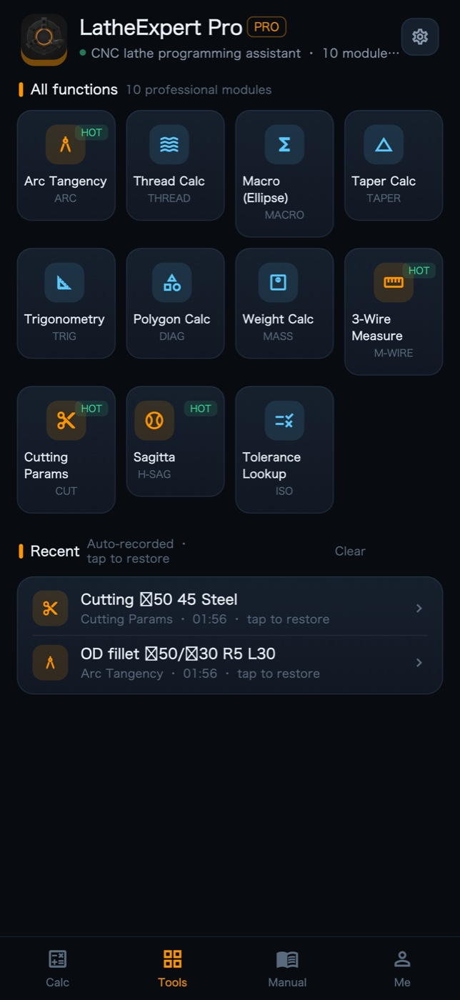
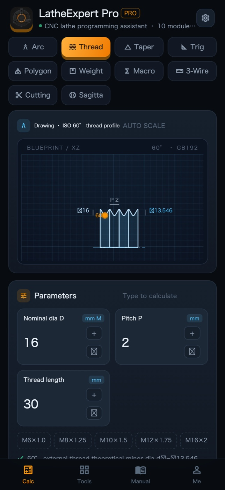
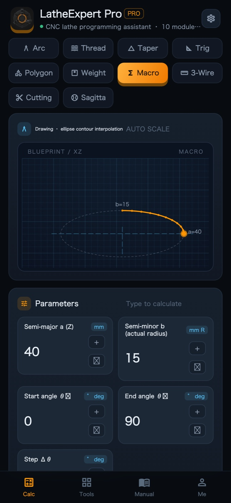
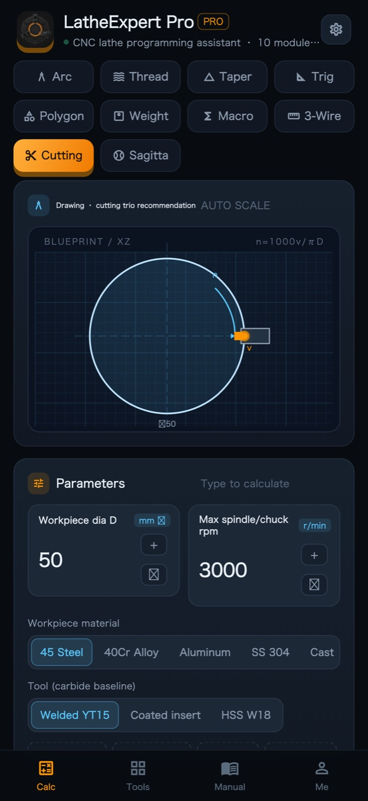
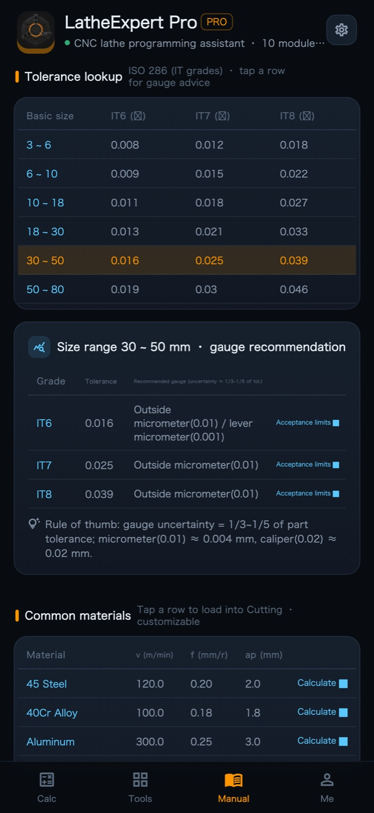
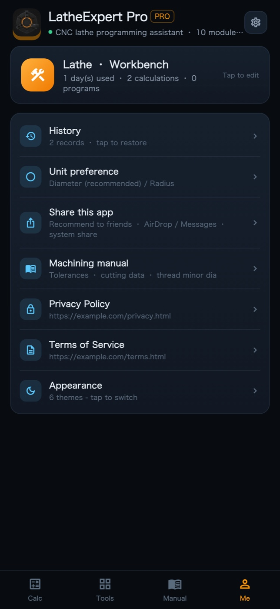

圆弧
Arc Tangency
Feed D₁, D₂, L and R; get tangency point T₁ (flank side) and T₂ (face side), with the direction chosen by standard G18 coordinates.
T₁ X30.000 Z−4.134 · T₂ …
Ten turning calculators plus a tolerance lookup. Every result carries its own drawing, process note and a copy-ready FANUC A block — and the whole app follows one global diameter / radius preference.

Each module keeps its own blueprint, its own process note and its own assumptions — the hint line under every result tells you what the numbers mean and where they stop being valid.
Feed D₁, D₂, L and R; get tangency point T₁ (flank side) and T₂ (face side), with the direction chosen by standard G18 coordinates.
Tap drill ⌀ = D − P, external minor diameter and radial thread depth, laid out as a two-block G76 with radial μm values.
Ellipse interpolation in FANUC Macro B, with the upper bound of the chord error so you can pick a step that suits the tolerance.
Large end D, small end d, taper length L and Z end: half angle for the compound rest, taper C and a G90 cycle with a 2 mm approach allowance.
Solve a right triangle from any two known values, with a quick reference of the angles you keep using.
Convert between across-flats and the circumscribed circle for square, hex and octagon — turn the round first, then index to form.
Bar, tube and plate: volume × density, with the formula and density shown in the result. Add a unit price for a cost check.
Best wire size d₀ = P/√3, theoretical pitch diameter d₂ = D − 0.6495P, measurement over wires M and Δd₂ = ΔM.
Pick material and tool (brazed YT15 / coated insert / HSS W18) to get v, then n = 1000v/πD rounded and capped by your machine speed limit.
R = ⌀S/2 and h = R − √(R² − (d/2)²), followed by three turning plans for single-slide, two-slide or batch work.
The GB/T 1800 table: tap a size segment for the recommended gauge, then jump to GB/T 3177 acceptance limits with safety margin A = T/10.
Four tabs — Calculate, Functions, Manual, Mine — each built around how a lathe actually gets set up.
Set it once and every module follows: X values and NC block headers switch together, so you never hand over a program in the wrong convention.
GB/T 1800 tolerance zones with gauge recommendations, GB/T 3177 acceptance limits, a cutting data table and a tap-drill table — tapping a material row loads it into the cutting module.
Recent calculations are archived by part and date; one tap puts every number back on the form. Mine keeps a running count of days, calculations and program blocks.
Results and the whole NC block copy as clean text; the app goes out through the system share sheet — WeChat, AirDrop — and falls back to copying the text if sharing fails.
Simplified, Traditional and English, following the system language. Dense tables are clamped so accessibility text scaling never collapses the layout.
Add a material with its own v, f and ap and it becomes selectable in the cutting module. Everything stays on the device.
Change it in Mine → Appearance. The blueprint redraws in the matching palette, so the drawing stays readable instead of just recoloured.
Calculate, Functions, Manual and Mine — swipe through the screenshots.






No. All calculations run on the device — it works in airplane mode, in a basement workshop, anywhere.
No accounts, no analytics, no advertising SDKs. Projects, materials and history stay in local storage on your device.
The blocks are standard FANUC A G18 contour examples and transfer cleanly, but each one is a contour skeleton: check tool-nose compensation, work coordinates and stock allowance before running it.
All three live on the Mine tab: Appearance (six themes), Language, and Unit preference (diameter programming is the default).
iPhone and iPad, plus a web build from the same Flutter codebase.
Tell us the module and the numbers you entered — we usually reply within one working day.